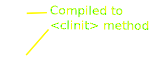

Will my lib or framework work on
(and GraalVM) ?
Peter Palaga
My main job:
mvnd - the Maven Daemon
https://github.com/mvndaemon/mvnd

Agenda
- Quarkus intro
- How Quarkus works
- Build time augmentation
- Native compilation with GraalVM
- How to write Quarkus extensions
What is Quarkus
Framework
Build time augmentation
Toolkit
Quarkus itself
Unopinionated
about how you should write your applications
Support for
Programming models
and
Frameworks
delegated to extensions
Why Quarkus?
Container First
| 💾 | Small size on disk | ✓ | Small container images |
| 🚀 | Fast boot time | ✓ | Instant scale up |
| 🔬 | Low memory footprint | ✓ | More containers with the same RAM |
Dev mode
mvn compile quarkus:dev
- Live reload
- Dev services (via Testcontainers)
- DBs, Kafka, Mock Mailer, ...
- Continuous testing
- DevUI
- Swagger UI, GraphQL UI, Health UI
https://quarkus.io/guides/dev-mode-differences#dev-mode-features
Developer 😍
Extensions
| Standards | Data | 3rd party libs/frameworks |
|
|
|
Check a more complete list on code.quarkus.io
Ecosystem of organizations
- micrometer-registry, logging-json, cxf, minio, mybatis, apicurio-registry-client, github-api, freemarker, tekton-client, google-cloud-services, ...
- Quarkus "Core" repo: quarkusio/quarkus (~200 extensions)
- Independent orgs/projects:
- Quarkiverse: incubator/hosting for community extensions:
How Quarkus works
Augmentation
Do as much as possible at build time:
- Analyze the application classes
- Record the bootstrap code
- Configure the native compiler
AoT1 native compilation
its goodies and gotchas
1) Ahead of (run)time
AoT compilation with GraalVM
$ native-image -jar my-app.jar
$ ls -lh
-rwxrwxr-x. 1 ppalaga ppalaga 19M Mar 20 14:39 my-app
$ ./my-app
...
my-app started in <20 ms
$ ps -o rss,command -p $(pgrep my-app)
PID RSS COMMAND
11229 12628 ./my-app
# ⮤ the process memory in kilobytesThe
gotchas
of the AoT compilation
An incomplete listThe
closed world
assumption
All runtime code has to be known at build time
- More effective static analysis
- Dead code elimination:
classes, fields, methods, branches
Dynaminc Classloading
in a native executable
Deloying jars, wars, etc. at runtime impossible
Reflection
Dynamic proxies
Classpath resources
JNI, Unsafe Memory Access
...
Class initializers
1/3
Class initializers
2/3
At build time:
- Resolve classes, run "safe" static initilizers
- Take a snapshot of the produced heap
- Store it in the executable
Class initializers
3/3
Downsides:
- Classes opening file handles, sockets and threads in their initializers need to marked as such
Complex CLI/config
Kept under the hood by Quarkus extensions
How to write
Quarkus Extensions
Quarkus extension
- Unit of Quarkus distribution
- A Maven dep of a user app
- Focus on some specific lib/framework/aspect
Two Maven modules
Build time module
my-ext-deployment
|
Runtime module
my-ext
|
class MyExtProcessor {
/* BuildSteps typically produce BuildItems */
@BuildStep
NameBuildItem nameStep() {
return new NameBuildItem("Joe");
}
/* BuildItems carry some payload */
final class NameBuildItem extends SimpleBuildItem {
final String name; /* The payload */
...
}
}class MyExtProcessor {
/* BuildSteps may consume BuildItems */
@BuildStep
HelloBuildItem helloStep(NameBuildItem nameItem) {
return new HelloBuildItem("Hello " + nameItem.getName());
}
@BuildStep
NameBuildItem nameStep() {
return new NameBuildItem("Joe");
}
/* helloStep depending on the nameStep
* determines the execution order */
}class MyExtProcessor {
@BuildStep
void helloStep(
NameBuildItem nameItem, /* BuildSteps may consume*/
GreetingBuildItem greetingItem, /* multiple BuildItems */
/* Results can also be published via BuildProducers */
BuildProducer<HelloBuildItem> helloProducer,
BuildProducer<FooBuildItem> fooProducer) {
/* BuildSteps may produce multiple BuildItems */
helloProducer.produce(
new HelloBuildItem(
greetingItem.getGreeting() + " " + nameItem.getName());
fooProducer.produce(new FooBuildItem());
}
}A common @BuildStep:
- Find classes having some annotation
- Register them for reflection
Jandex
A Java annotation indexer
and offline reflection library.
Used by @BuildSteps
to inspect the application code
https://github.com/wildfly/jandex
class JacksonProcessor {
@BuildStep
void registerDeserializers(
CombinedIndexBuildItem combinedIndex, /* Pass the Jandex */
BuildProducer<ReflectiveClassBuildItem> reflProducer) {
DotName JSON_DESERIALIZE =
DotName.createSimple(JsonDeserialize.class.getName());
for (AnnotationInstance annot /* Query for the annotations */
: combinedIndex.getIndex().getAnnotations(JSON_DESERIALIZE)) {
/* Do some filtering */
AnnotationTarget annotTarget = annot.target();
if (CLASS.equals(annotTarget.kind())) {
DotName dotName = annotTarget.asClass().name();
Type jandexType = Type.create(dotName, Type.Kind.CLASS);
/* ... and finally register the type for reflextion */
reflProducer.produce(new ReflectiveClassBuildItem(jandexType));
}}}}More Jandex usecases
- Find classes/fields/methods having some annotation
- Find classes implementing an interface
- Find subclasses of a class
- List fields, methods and constructors of a class
Build time module
my-ext-deployment
|
Runtime module
my-ext
|
class CamelProcessor {
@Record(ExecutionTime.STATIC_INIT) /* @Recorders can be injected */
@BuildStep /* ⮦ as BuildStep method params */
CamelContextBuildItem context(CamelRecorder recorder) {
RuntimeValue<CamelContext> context = recorder.createContext();
return new CamelContextBuildItem(context); /* ⮤ @BuildStep methods */
}/* ⮤ The RuntimeValue can be dispatched */ /* can invoke */
} /* to other @BuildSteps via a BuildItem */ /* @Recorder methods */
@Recorder
public class CamelRecorder {
public RuntimeValue<CamelContext> createContext() {
/* ⮤ A handle to pass values between recorders */
FastCamelContext context = new FastCamelContext();
return new RuntimeValue<>(context);
}}
Extensions may depend on each other
E.g. mp-metrics extension
depends oncamel-quarkus-core
so it can consume the CamelContextBuildItem and adjust the CamelContext as needed
class MpMetricsProcessor {
@Record(ExecutionTime.STATIC_INIT)
@BuildStep
public void configureCamelContext(
MpMetricsRecorder recorder,
CamelContextBuildItem ctxItem) {
recorder.configureCamelContext(ctxItem.getCamelContext());
}}
@Recorder
public class MpMetricsRecorder {
public void configureCamelContext(RuntimeValue<CamelContext> ctxVal) {
/* Unwrap the RuntimeValue ⮧ */
CamelContext camelContext = ctxVal.getValue();
/* ... and configure it as needed */
ManagementStrategy strategy = camelContext.getManagementStrategy();
strategy.addEventNotifier(new MpMetricsCamelContextEventNotifier());
}}Resulting application bootstrap code:
class GeneratedMain { /* bytecode in reality, pseudocode here */
static { /* Chunks recorded with @Record(ExecutionTime.STATIC_INIT) */
CamelRecorder camelRecorder = new CamelRecorder();
RuntimeValue<CamelContext> val1 = camelRecorder.createContext();
/* The order of the calls is given by
* the dependencies between the @BuildSteps */
MpMetricsRecorder mpMetricsRecorder = new MpMetricsRecorder();
mpMetricsRecorder.configureCamelContext(val1);
}
public static main(String[] args) {
/* Chunks recorded with @Record(ExecutionTime.RUNTIME_INIT) */
new VertxRecorder().openSocket(); /* can't do this in static init */
}}Mostly used BuildItems
ReflectiveClassBuildItem
register classes for reflection in the native modeAdditionalBeanBuildItem,BeanDefiningAnnotationBuildItem
bean classes the CDI container should analyzeExtensionSslNativeSupportBuildItem
turn on SSL in the native modeCombinedIndexBuildItem,ApplicationIndexBuildItem
offline reflection and annotation index (Jandex)NativeImageResourceBuildItem
src/main/resources and resources from JARs not included by default in the native image
List of BuildItems provided by Quarkus
Extension configuration
- Extensions may expose their configuration through annotated POJOs
- These may come in three flavors:
BUILD_TIMEBUILD_AND_RUN_TIME_FIXEDRUN_TIME
@ConfigRoot(name = "camel", phase = ConfigPhase.BUILD_AND_RUN_TIME_FIXED)
public class CamelConfig {
@ConfigItem
public MainConfig main;
@ConfigGroup
public static class MainConfig {
@ConfigItem(defaultValue = "true")
public boolean enabled;
/* This option can be set in application.properties via
*
* camel.main.enabled = true
*
*/
}
}
Config in @BuildSteps
class CamelProcessor {
@BuildStep
... discoverRoutesBuilderClassNames(CamelConfig config, ...) {
if (config.main.enabled) {
/* Do something */
}
}
}
Config in @Recorders
@Recorder
public class MyRecorder {
void record(CamelConfig camelConfig) {
if (camelConfig.main.enabled) {
/* Do something */
}
/* Same effect using
* org.eclipse.microprofile.config.ConfigProvider */
if (ConfigProvider.getConfig()
.getValue("camel.main.enabled", Boolean.class)) {
/* Do something */
}
}}Substitutions
- Provided by GraalVM
- For replacing classes in the native image
Substitutions usecases
- Last resort for fixing third party code
- E.g. avoid opening a socket, starting a Thread, etc. in a static initializer
- Cut off uneeded code (and its dependencies)
- E.g. parsing an XML config that is not supported on Quarkus
A substitution example
(1/2)/* The original class (simplified) */
package com.mysql.cj.jdbc;
public class AbandonedConnectionCleanupThread implements Runnable {
private static final ExecutorService cleanupThreadExcecutorService;
private static Thread threadRef = null;
static {
cleanupThreadExcecutorService =
Executors.newSingleThreadExecutor(r -> { ... });
/* GraalVM does not like threads being started in a static block */
cleanupThreadExcecutorService.execute(
new AbandonedConnectionCleanupThread());
}
...
}A substitution example
(2/2)@Substitute /* The substitution class */
@TargetClass(AbandonedConnectionCleanupThread.class)
final public class AbandonedConnectionCleanupThread_disable {
/* No static initializer here */
@Substitute
protected static void trackConnection(
MysqlConnection conn, NetworkResources io) {
/* A no-op method */
}
}Further topics
Wrap up
- Shrink and speedup the app
- Inspect the app code (annotations, interfaces, config files ...) at build time
- Bootstrap and configure the app via @Recorder methods
- Make the native compiler happy
- Register reflection, proxies, JNI, ...
- Resources to include in the native image
- Substitutions
Useful Links
- Guide for Quarkus extension authors: quarkus.io/guides/writing-extensions
- Chat: quarkusio.zulipchat.com
- Mailing list: groups.google.com/d/forum/quarkus-dev